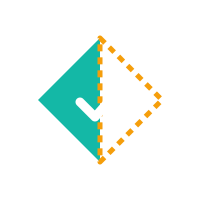
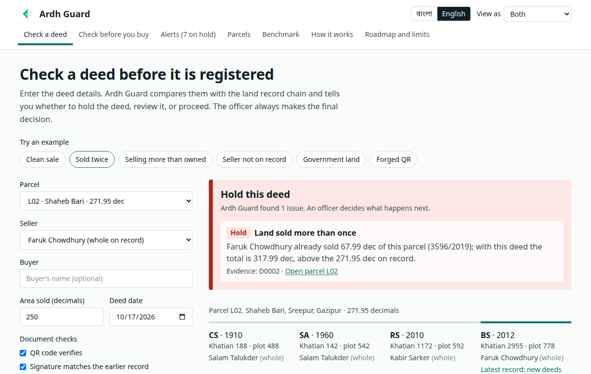
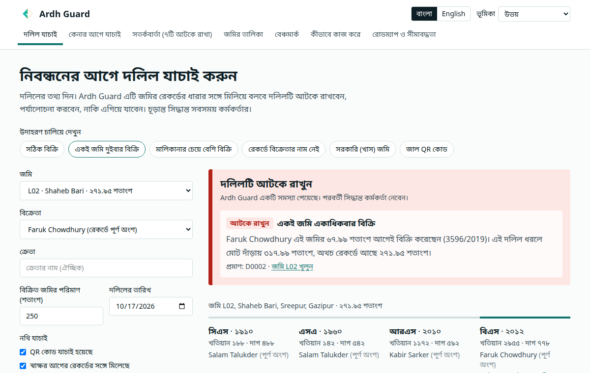

Ardh Guard
Explainable conflict checks for land deeds, before registration and before mutationনিবন্ধন ও নামজারির আগে দলিলের অসংগতি ধরার ব্যাখ্যাযোগ্য ব্যবস্থা
Team Ardh · LandTech Innovation Hackathon 2026 · Problem P3: Catch Fraud & Double-Sellingটিম Ardh · ল্যান্ডটেক ইনোভেশন হ্যাকাথন ২০২৬ · সমস্যা P3: জালিয়াতি ও একই জমি একাধিকবার বিক্রি শনাক্তকরণ
The same land, sold twiceএকই জমি, দুইবার বিক্রি
- Deed, khatian chain and mutation sit in different officesদলিল, খতিয়ানের ধারা আর নামজারি থাকে আলাদা আলাদা অফিসে
- Nobody cross-checks them when a sale is acceptedবিক্রি গ্রহণের সময় কেউ এগুলো মিলিয়ে দেখে না
- Khatians carry known kinds of errors, so one document is not enoughখতিয়ানে পরিচিত ধরনের ভুল থাকে, তাই একটি নথির ওপর ভরসা করা যায় না
- Result: land sold twice, sellers who do not own it, mutations that do not match the deedফল: একই জমি একাধিকবার বিক্রি, মালিক নন এমন বিক্রেতা, দলিলের সঙ্গে না-মেলা নামজারি
Ardh Guard: a second pair of eyesArdh Guard: বাড়তি একজোড়া চোখ
Two checkpoints: before registration and before mutation. It never decides ownership.দুই ধাপ: নিবন্ধনের আগে ও নামজারির আগে। এটি কখনো মালিকানা নির্ধারণ করে না।
See it workচালিয়ে দেখুন


Same seller sells again → Hold, with the reason.একই বিক্রেতা আবার বিক্রি করলে → কারণসহ আটকে রাখুন।
Six one-click examples. Live now:ছয়টি এক-ক্লিক উদাহরণ। এখনই চালু:
land-tech-innovation-hackathon-2026.vercel.appEight readable checksআটটি পড়ার মতো যাচাই
- Land sold more than onceএকই জমি একাধিকবার বিক্রি
- Selling more than the seller ownsমালিকানার চেয়ে বেশি জমি বিক্রি
- Government (khas) landসরকারি (খাস) জমি
- Seller is not on the recordরেকর্ডে বিক্রেতার নাম নেই
- Document looks altered (QR, signature)দলিল পরিবর্তিত বা জাল হতে পারে (QR, স্বাক্ষর)
- Mutation does not match the deedনামজারি দলিলের সঙ্গে মেলেনি
- Deed registered, never mutatedদলিল নিবন্ধিত, কিন্তু নামজারি হয়নি
- Mutation resubmitted after rejectionপ্রত্যাখ্যানের পর নামজারি আবার দাখিল
Holdআটকে রাখুন Reviewপর্যালোচনা Noteটীকা Every check is a plain rule an officer can explain.প্রতিটি যাচাই একটি সহজ নিয়ম, যা কর্মকর্তা ব্যাখ্যা করতে পারেন।
For citizens and officers, in Banglaনাগরিক ও কর্মকর্তার জন্য, বাংলায়
Sign-in is a demo gate with four demo accounts, not real security. Real use needs real sign-in and an audit trail.প্রবেশ শুধু ডেমো, চারটি ডেমো অ্যাকাউন্ট, প্রকৃত নিরাপত্তা নয়। বাস্তব ব্যবহারে প্রকৃত লগইন ও অডিট ট্রেইল লাগবে।
What we can honestly sayযা আমরা সততার সঙ্গে বলতে পারি
8 of 8 testable planted anomalies caughtযাচাইযোগ্য ৮টির ৮টি বসানো অসংগতি ধরা পড়েছে
A regression test on dummy data, not accuracy. The rules were written knowing the data.ডামি ডেটায় রিগ্রেশন টেস্ট, নির্ভুলতা নয়। ডেটা জেনেই নিয়ম লেখা হয়েছে।
- Dummy data only. No real land recordsশুধু ডামি ডেটা। কোনো বাস্তব ভূমি রেকর্ড নেই
- Small benchmark; chain-break detection untestedছোট বেঞ্চমার্ক; রেকর্ডের ধারা ভাঙা শনাক্তের পরীক্ষা হয়নি
- Names matched exactly; Bangla spelling variants not handledনাম হুবহু মেলানো হয়; বাংলা বানানের ভিন্নতা সামলানো যায় না
- Flags cases for officers; not a legal title checkকর্মকর্তাদের জন্য সতর্কবার্তা; আইনি মালিকানা যাচাই নয়
What we will do nextআমরা এরপর যা করব
v1.1 · final roundv1.1 · চূড়ান্ত রাউন্ড
- Coherent-chain data and chain-break ruleধারাবাহিক ডেটা ও ধারা-ভাঙা শনাক্তের নিয়ম
- Owner alerts, dispute hold, audit trail, sign-inমালিককে সতর্কবার্তা, বিরোধ-স্থগিত, অডিট ট্রেইল, লগইন
- AICase summaries in Bangla and English (pretrained model)বাংলা ও ইংরেজিতে সারসংক্ষেপ (আগে থেকে প্রশিক্ষিত মডেল)
v2 · after the hackathonv2 · হ্যাকাথনের পর
- Pilot at one sub-registry and its AC Land officeএকটি সাব-রেজিস্ট্রি ও এসি ল্যান্ড অফিসে পাইলট
- AIBangla OCR for scanned khatiansস্ক্যান করা খতিয়ানের জন্য বাংলা OCR
- AIML risk ranking after the rulesনিয়মের পরে ML ঝুঁকি-ক্রম
AI items are plans; none is built. · Team Ardh: Jobayer (Team Leader), S.M. Mehedy Kawser · Mentors: Zannatul Mawa Koli, MD. Tahamid Hassan SadibAI-সংক্রান্ত সবকিছু পরিকল্পনা, এখনও তৈরি হয়নি। · টিম Ardh: Jobayer (দলনেতা), S.M. Mehedy Kawser · মেন্টর: Zannatul Mawa Koli, MD. Tahamid Hassan Sadib